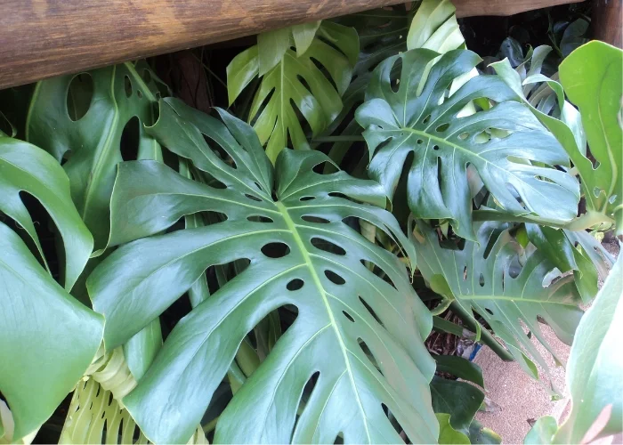

Costela de Adão
A costela de adão (Monstera deliciosa) é uma planta tropical conhecida por suas folhas grandes, verdes e características que apresentam cortes e furos, dando a impressão de uma "costela". Nativa das florestas tropicais do México e da América Central, essa planta pode crescer como uma trepadeira, subindo por troncos de árvores ou se espalhando pelo chão.
As folhas da costela de adão podem atingir até 1 metro de comprimento e têm uma textura cerosa e brilhante. Com o tempo, à medida que a planta envelhece, as folhas desenvolvem mais cortes e furos, o que a torna ainda mais distinta e decorativa. A planta também produz flores brancas e, posteriormente, frutos comestíveis que têm um sabor que lembra uma mistura de abacaxi e banana, embora seu consumo deva ser feito com cautela, pois os frutos só estão prontos para o consumo quando completamente maduros.
A costela de adão é uma planta popular em decoração de interiores e jardins, sendo apreciada por sua aparência exótica e sua capacidade de purificar o ar. Ela prefere luz indireta brilhante e solo bem drenado, além de ser bastante tolerante a diferentes condições de cultivo, tornando-a uma escolha ideal para quem busca uma planta de fácil cuidado e impacto visual.